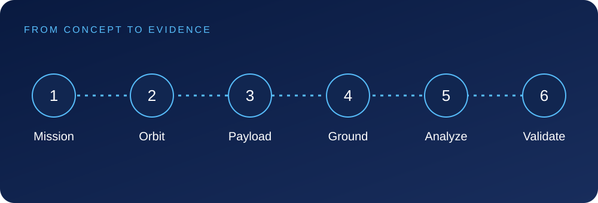

Concepts, worked examples, assignments and a coherent course project.
SamkhyaAcademy
COURSE GUIDE · 2026
Who it is for · What you will learn
Your next capability.
A deep-tech path through orbital foundations, embedded systems, spacecraft architecture, communications, avionics, AI/autonomy and mission delivery.
Understand spacecraft systems engineering
Build embedded and communication subsystems
Use simulation and mission tools
Complete a CubeSat/CanSat-style team project
Audience
Engineering students
Embedded developers
Space-tech aspirants
Prerequisites
Engineering or strong STEM foundation

One curriculum, three connected views
This guide summarizes the same modules and lessons shown on the course overview and in the learning workspace. The next pages explain the scope and practical evidence for every module.
SamkhyaAcademy
COURSE GUIDE · 2026
Detailed module curriculum · 1-2
Build the foundations.
The module names, lesson sequence and evidence below match the course learning workspace.
1Space Systems Foundations
Design an educational Earth-observation mission that measures vegetation change. Start with the decision the data must support, not with a shopping list of satellite components.
1.1Space mission lifecycleA mission moves from a stakeholder need through concept studies, requirements, design, integration, verification, operations and disposal.
1.2Orbital mechanicsAn orbit determines where a spacecraft travels, how often it can observe a location and when it can contact a ground station.
1.3Space environmentVacuum, radiation, temperature cycling and debris create different design constraints from a terrestrial classroom.
1.4Systems engineeringSystems engineering connects the mission objective to measurable requirements, interfaces and verification evidence.
You will produce: Mission brief, orbit calculation with units, and a requirements/verification matrix.
2Spacecraft Subsystems
Turn the mission concept into compatible subsystem budgets. The payload is intermittent, the computer runs continuously and the radio transmits only during contact.
2.1Power systemsPower is an instantaneous rate in watts; energy is accumulated demand in watt-hours.
2.2Thermal and structuresThermal design tracks where heat is generated and how it leaves the spacecraft.
2.3ADCSAttitude determination estimates orientation using sensors; attitude control changes orientation using actuators.
2.4Subsystem interfacesSubsystem interfaces define more than connector shape.
You will produce: Power and eclipse budgets, a thermal/load-path sketch, and an interface-control record.
SamkhyaAcademy
COURSE GUIDE · 2026
Detailed module curriculum · 3-4
Apply, integrate and demonstrate.
The module names, lesson sequence and evidence below match the course learning workspace.
3Avionics and Communications
Create an educational telemetry chain from a simulated sensor to a ground dashboard. Every reading must remain interpretable when delayed, missing or corrupted.
3.1Embedded systemsAn embedded controller has limited memory, execution time and power.
3.2Sensors and telemetryTelemetry is a documented message, not just a number.
3.3RF and ground stationsA radio link needs a budget: transmitter power, antenna gains, path loss and other losses determine received power.
3.4Flight software conceptsFlight software is commonly organized around explicit operating modes and controlled transitions.
You will produce: Telemetry schema, packet-loss test log, ground display and recovery-state diagram.
4Autonomy and Mission Project
Integrate the mission brief, subsystem budgets and telemetry prototype into a reviewed educational mission package. Prefer explainable behavior to unsupported autonomy claims.
4.1AI and autonomyAutonomy chooses an action without a person issuing every immediate command.
4.2Simulation and testingSimulation makes repeatable tests possible before hardware is available, but the model has limits.
4.4CubeSat/CanSat-style capstoneThe capstone is a coherent mission concept plus a simulated or ground-based educational demonstrator.
You will produce: Mission demonstrator, traceable verification report, operations runbook and final review presentation.
SamkhyaAcademy
COURSE GUIDE · 2026
Projects and working methods
Mission concept and satellite-data application
Define a mission objective, reason about system trade-offs and demonstrate an application of satellite or geospatial data.
Mission concept and trade study
System and ground-segment diagram
Data application and validation notes
Tools and methods
Python and LinuxEmbedded C/C++Simulation toolsCAD, PCB and FPGA concepts
Tools are learning choices, not partner endorsements.
Inside module 2: a worked example
Illustrative power budget:
Payload: 8 W x 0.25 = 2 W average
Computer: 2 W x 1.00 = 2 W average
Radio: 10 W x 0.10 = 1 W average
Average before losses = 5 W; simultaneous peak = 20 W
35-minute eclipse at 5 W needs 2.92 Wh at the loads
At 85% conversion efficiency and 80% usable capacity:
Required nominal energy >= 2.92/(0.85*0.80) = 4.29 Wh
Educational estimate only; aging, temperature and margins remain to be assessed.
The 5 W average, 20 W peak and 4.29 Wh nominal-energy estimate answer different design questions. Preserve all three instead of replacing them with one “power requirement”.
How your work is reviewed
Show the artifact, explain your decisions, test the stated assumptions and identify limitations. Module assignments build toward the course project rather than replacing it with a single example.
SamkhyaAcademy
COURSE GUIDE · 2026
Delivery, completion and next steps
Know what you are signing up for.
Delivery
Cohort-based learning · 24+ weeks
Confirm current schedule, cohort arrangements and enrollment terms with the academy.
Completion requirements
Complete the required coursework and module assignments, and pass the course assessment. A course completion certificate is available after those requirements are met.
What the learning workspace includes
Follow the modules
Expand the curriculum and open the exact lesson you need.
Apply the concepts
Read explanations, inspect examples and complete module practice.
Keep your evidence
Use resources, notes, discussion and assignments to support your learning.
Learning commitments, not outcome guarantees
Completion is not a placement, employment or performance guarantee. The course project is educational evidence; any production use requires appropriate review and validation.
Educational mission scope
The CubeSat/CanSat-style capstone is a simulated or ground-based educational demonstrator. Launch, flight qualification and radio-spectrum approvals are not included or implied.
Start with the curriculum. Continue with the first lesson.
Review your starting point, download this guide and explore the connected course experience.
Client-review edition. The static learning workspace saves demonstration progress locally; production enrollment, assessment, communications and certificate issuance are not connected.